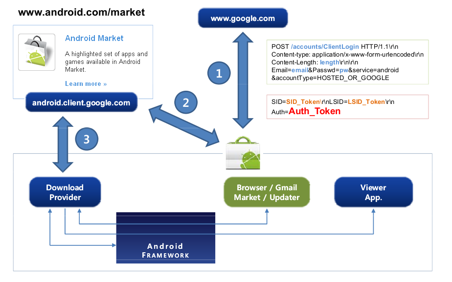
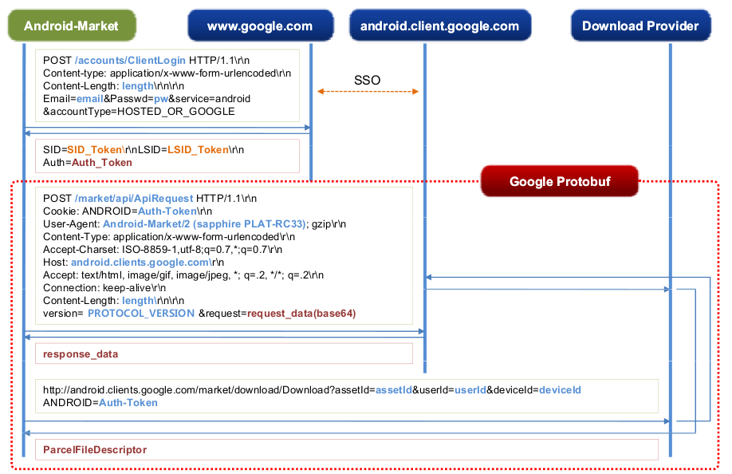

Login URL : https://www.google.com/accounts/ClientLogin
参数 :
| 参数 | 值 |
|---|---|
| Google 帐号 | |
| Passwd | Google 帐号密码 |
| service | "android" |
| accountType | "HOSTED_OR_GOOGLE" |
请求后返回的响应字符串中找 Auth:xxxxxxxxxx
URL: http://android.clients.google.com/market/download/Download
需要两个参数:
| 参数 | 值 |
|---|---|
| userId | 与Google帐号相关的值，用tcpdump抓数据包，然后用wireshark分析。也可以从DownloadProvider 数据库中找到 |
| deviceId | 手机设备号，也可以用SDK默认的"000000000000000" |
设置cookie, User-agent：
Cookie:"ANDROID=" + authToken
User-agent:AndroidDownloadManager
POST /market/api/ApiRequest HTTP/1.1
Host: android.clients.google.com
Connection: Keep-Alive
Content-Length: 476
user-agent: Android-Market/2 (dream CRC1); gzip
content-type: application/x-www-form-urlencoded
version=2&request=CsUCCuABRFF….ETXl5Qi1wUDcy
request 后面的字符串，是参数protbuf序列化，再经过base64加密。
请求的Context参数如下:
| 参数 | 值 |
|---|---|
| authSubToken | authsub token for service 'android' |
| unknown1 | always 0 |
| version | always 1002 |
| deviceId | android id converted to hexadecimal //可以用默认的"0000000000000000" |
| deviceAndSdkVersion | ro.product.device ':' ro.build.version.sdk //"sapphire:8" |
| userLanguage | ro.product.locale.language //"zh" |
| userCountry | ro.product.locale.region //"cn" |
| operatorAlpha | gsm.operator.alpha //"T-Mobile USA" |
| simOperatorAlpha | gsm.sim.operator.alpha //"T-Mobile USA" |
| operatorNumeric | gsm.operator.numeric //"310260" |
| simOperatorNumeric | sim.gsm.operator.numeric //"310260" |
发送请求后，得到的响应数据是经过gzip压缩过的。
参考: